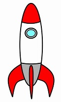

The images below use the same picture as its source. It appears differently because of the width and height attributes. Reproduce them without modifying the image itself.
This is a picture of the rocket shown at full size
This rocket is 1/2 size. I know the dimensions are 124 x 206
This rocket is short but as wide as the original.
This rocket is skinny.
Begin by finding the special character entities reference on W3Schools. You will need this to accomplish the job outlined here.
Here are the first three lower case Greek letters and how to make them in a handy-dandy list. Notice that the <pre> tag has an inline cousin <code>. Use it where appropriate!
αβγThe volume of a cone is V=π/3r²h, where r is the radius and h is the height. Did you notice the superscript? Can you figure out how to do that?
Can you recreate this?
∀ ∃ ← ∈ © € ♣
Use the <pre> tag to create the image below. If that is easy sailing, try your own design!
/|
/ |
/ |
/___|
_______|______
\ ___________/